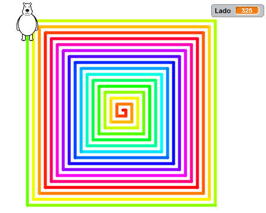
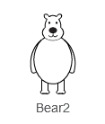
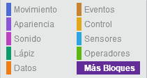
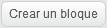
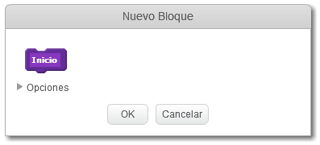
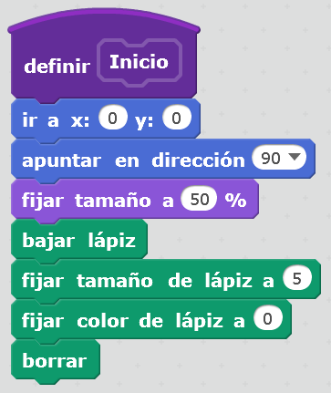

1. Dibujar una espiral¶
{kind=link}
En esta práctica vamos a mover a un personaje para que dibuje en la pantalla una espiral con colores.
Iniciamos el editor de Scratch.
Borramos el gato presionando sobre él con el botón derecho del ratón y luego pulsamos borrar.

Añadimos un nuevo personaje, un oso polar.
Pulsamos el botón de nuevo objeto

A continuación pulsamos en Categoría Animales.
Luego seleccionamos el objeto bear2.
En la pestaña de Programas creamos una nueva función llamada Inicio.
Primero pulsamos en el botón más bloques

A continuación pulsamos en crear un bloque 
Luego cambiamos el nombre del nuevo bloque a Inicio
Por último pulsamos el botón OK
Programamos la función Inicio con las siguientes instrucciones
Con este programa inicial, el oso polar se colocará en el centro de la pantalla a tamaño pequeño y se borrarán todos los dibujos anteriores. De esta forma todo comenzará en blanco cada vez que ejecutemos el programa.
Ahora crearemos la variable Lado que guardará el tamaño del lado de la espiral.
Dentro de la pestaña Datos ,
pulsamos crear una variable
Cambiamos el nombre de la variable a Lado

Por último pulsamos el botón OK
Por último crearemos el programa que dibuja una espiral.

Por último pulsaremos en la bandera verde
 para ver el resultado:
para ver el resultado:
{kind=link}
Ejercicios¶
Modifica el programa para que dibuje una espiral octogonal. Los giros deberán ser de 45 grados y en cada giro el Lado deberá cambiar 1. La espiral deberá parar cuando el tamaño del Lado sea mayor que 147.
Modifica el programa para que dibuje una espiral hexagonal (con giros de 60 grados)